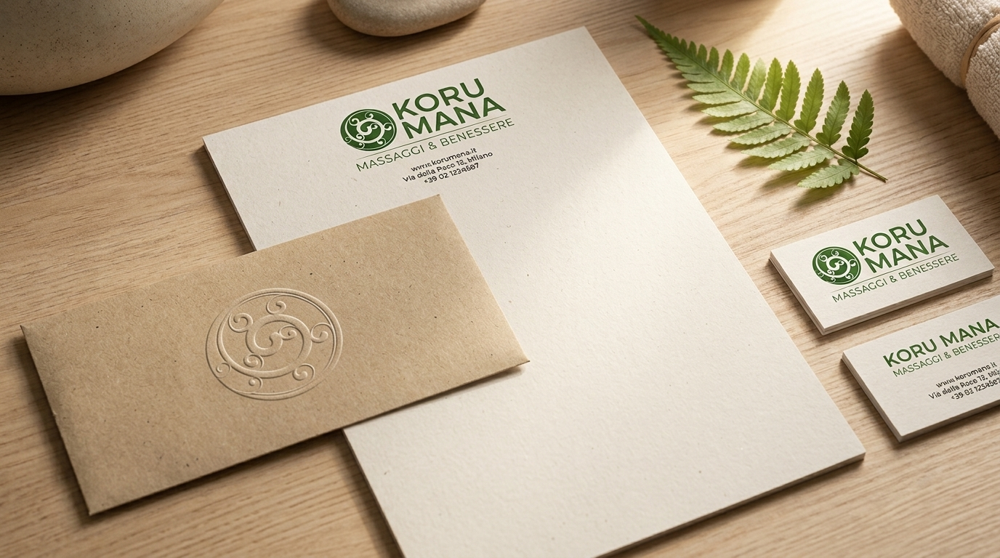
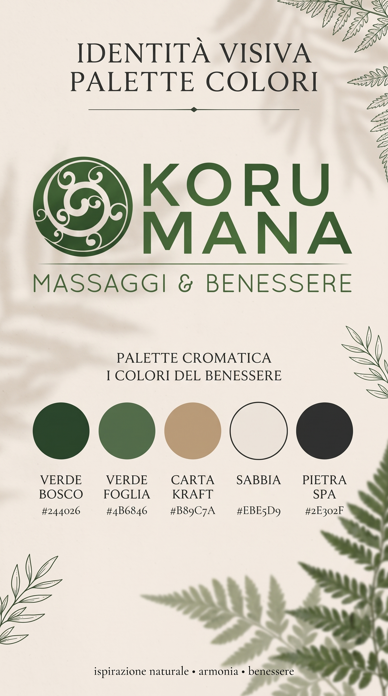
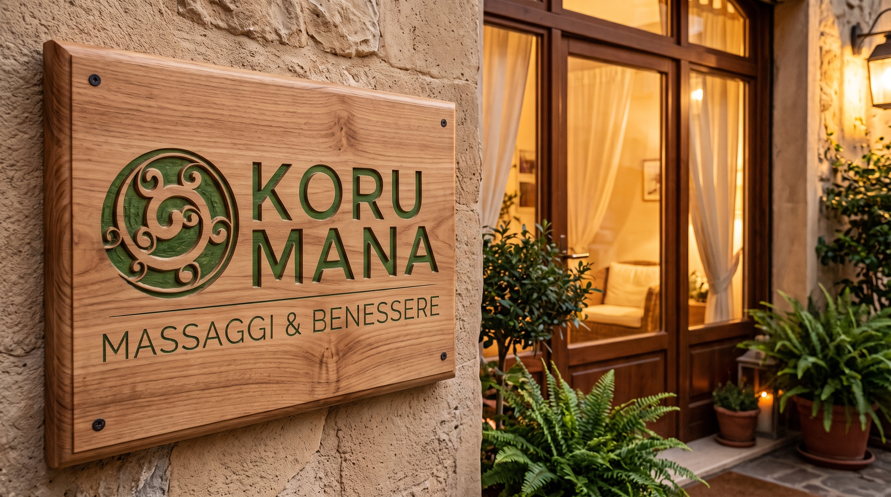
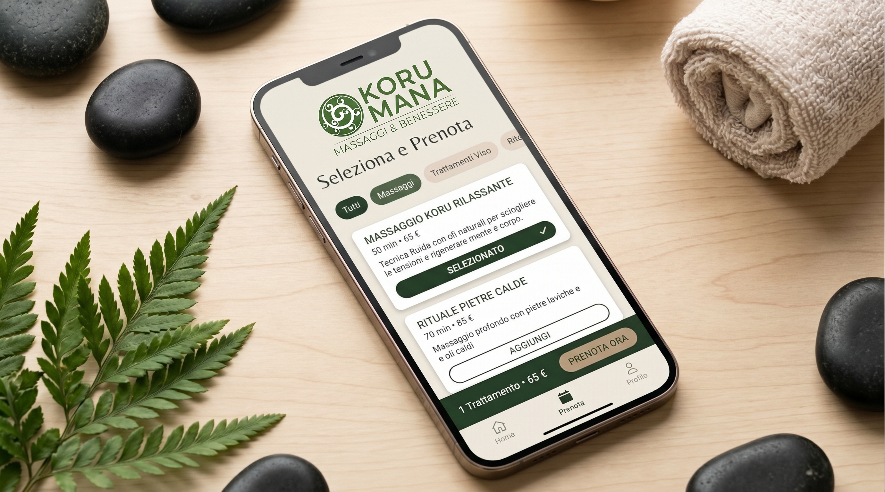
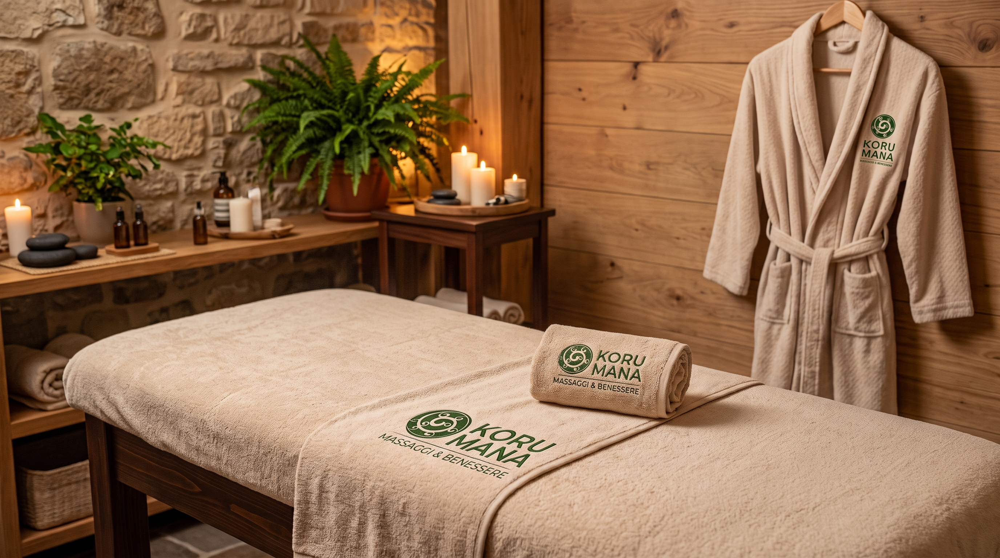

KORU MANA
Un'identità visiva e un concept olistico nati per celebrare il benessere e la rigenerazione. Dalla simbologia maoriana del germoglio Koru fino alla declinazione dei supporti fisici e digitali dello studio.


«La spirale del Koru rappresenta il germoglio che si srotola verso la luce: un'invocazione alla rinascita interiore attraverso l'armonia del tocco.»


